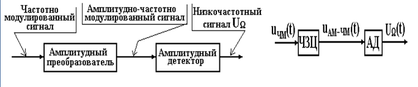

Частотный детектор.Синхронный детектор. Гетеродинный детектор.
Частотные детекторы
Детекторной характеристикой ЧД называется показанная графически или заданная в виде математической формулы зависимость выходного напряжения UW ЧД от частоты входного сигнала f. Отклонения графика детекторной характеристики от линейной однозначно связаны с нелинейными искажениями. Их можно качественно оценить по виду детекторной характеристики Чем более линейна детекторная характеристика, чем ближе она к идеальной, тем меньше нелинейные искажения.
При частотном детектировании с амплитудным преобразованием реализуется алгоритм, показанный на рисунке, а именно:
а) частотно-модулированный ВЧ сигнал преобразуется в ВЧ сигнал, модулированный по амплитуде тем же законом модуляции, что и частота исходного сигнала;
б) амплитудно-модулированный сигнал подвергается амплитудному детектированию, в результате чего образуется НЧ сигнал, изменяющийся по закону модуляции частоты исходного сигнала.

При частотном детектировании с фазовым преобразованием реализуется алгоритм, показанный на рисунке, а именно:
а) частотно-модулированный ВЧ сигнал преобразуется в ВЧ сигнал, модулированный по фазе тем же законом модуляции, что и частота исходного сигнала;
б) модулированный по фазе сигнал подвергается фазовому детектированию, в результате чего образуется НЧ сигнал, изменяющийся по закону модуляции частоты исходного сигнала.
Рассмотрим случай, когда ВЧ сигнал, модулированный по частоте, пропускается через цепь с линейной фазочастотной характеристикой. Пусть через такую цепь, которую назовем фазосдвигающей цепью (ФСЦ), проходит частотно модулированный сигнал. Тогда на выходе предполагаемой цепи формируется напряжение с изменяющейся фазой, которая точно повторяет закон модуляции частоты входного сигнала.
Таким образом, получен сигнал с двойной (фазовой и частотной) модуляцией, законы изменения которых одинаковы. К этому сигналу можно применить фазовое детектирование. В качестве опорного следует взять исходное частотно-модулированное напряжение сдвинутое на p/2. В результате получаем низкочастотное напряжение UW , повторяющее изменения фазы, а, следовательно и частоты.
Способ частотного детектирования, при котором сигнал с ЧМ преобразуется в последовательность одинаковых (нормированных) по амплитуде и длительности видеоимпульсов, алгоритмически самый простой. Реализовать этот способ можно подсчетом количества полученных импульсов за единицу времени (интегрированием), - количество импульсов пропорционально частоте их следования, т.е. пропорционально частоте исходного ВЧ сигнала.
Гетеродинный детектор
Пусть на входе АД воздействует телеграфный сигнал. При простом амплитудном детектировании во врмя действия телеграфных посылок на выходе АД образуется напряжение, по форме повторяющее огибающие телеграфных посылок. Это напряжение в промежутки времени возрастания и спада в телефонах может создавать только звуковые щелчки. Естественно, что прием таких сигналов на слух невозможен.
Пусть на входе АД воздействует телеграфный сигнал. При простом амплитудном детектировании во врмя действия телеграфных посылок на выходе АД образуется напряжение, по форме повторяющее огибающие телеграфных посылок. Это напряжение в промежутки времени возрастания и спада в телефонах может создавать только звуковые щелчки. Естественно, что прием таких сигналов на слух невозможен.
Подбором частоты гетеродина всегда можно добиться, чтобы разность |(wc - wг)| находилась в области звуковых частот. Достоинство гетеродинного детектирования в том, что позволяет повысить чувстви-тельность РПУ.
Синхронный детектор
Другое название синхронного детектора — когерентный детектор.
Существенным недостатком синхронного детектора, ограничивающим области его применения, является необходимость синхронизации опорного напряжения принимаемым сигналом с точностью до фазы.